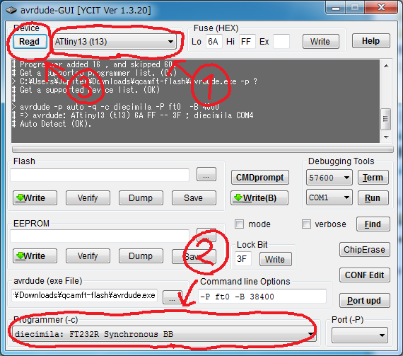
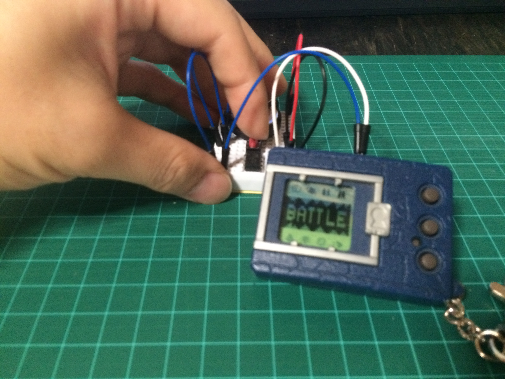

簡易サンドバッグの作り方
記事作成 : 2016/12/2(金)
はじめに
前にも言いましたが、育成ギアがひょっこり出てきて久しぶりに遊びたいけど対戦相手がいないという方々はけっこういるみたいです。 そこで、電子工作未経験のそんな人でもサンドバッグを作って遊べるよう解説をしたいと思います。 プログラムはこちらで用意したものを使用すれば自分で作る必要もコンパイルする必要もありません。 初心者の方にとって厄介なハンダ付けも今回は行わないで済むようにしています。 使用する部品も可能な限り削減して簡単にしていますので、興味のある方は是非作ってみて下さい(あ、でも使用するのは自己責任でお願いします)。
使用部品
まず、使用する電子部品の紹介をします。 下の表が今回使用する部品の一覧です。 全て秋月電子で売ってるもので統一しました。 通販コードも書いていますので、これを秋月のWebサイトの商品検索欄に入力すれば部品を特定することができます。
価格は合計で1370円ですが、一番上のFT232RLモジュールはマイコンにプログラムを書き込むとき使用するだけなので、 サンドバッグ本体の価格は実質これを引いた420円となり、ほとんどワンコインで作成可能です。 (さらに言えば、ユニバーサル基盤で作成するとブレッドボードやジャンパ線も不要なので100円ちょっとまで抑えられます。)
| 部品名 | 価格 | 数量 | 通販コード | 画像 |
|---|---|---|---|---|
| FT232RLモジュール | 950円 | 1個 | K-01977 | * |
| ATtiny13A | 50円 | 1個 | I-02911 | * |
| ブレッドボード | 130円 | 1個 | P-05155 | * |
| ジャンパ線 | 180円 | 1個 | C-05371 | * |
| タクトスイッチ | 10円 | 1個 | P-03646 | * |
| ボタン電池ホルダ | 50円 | 1個 | P-00706 | * |
各部品について簡単に説明をしておきます。 読まなくても回路は作れますので興味の無い方は読み飛ばしても構いません。
【FT232RLモジュール】
USBの通信をRS-232Cという通信規格の信号に変換するためのモジュールです。 RS-232CはUSBが普及する以前に一般的に使われていたものらしいですが、昔すぎてよく知りません(笑)。 なんでもパソコンが登場するより前だとかなんとか...。 ただ、信号が単純なので今でもマイコンではよく使用されています。 今回は通信するためではなくマイコンにプログラムを書き込むために使用します。 このモジュールは何かと使えるので電子工作したい人は是非買っておくことをオススメします。
【ATtiny13A】
これが今回作成するサンドバッグの要とも言えるマイコンです。 マイコンという言葉を聞いたことがない人のために説明しますと、マイコンというのは小さな小さなコンピュータです。 パソコンと同じようにプロセッサやメモリが内蔵されていて、プログラムで動きます。 しかし、パソコンはプログラムを自分自身でダウンロードしてきて実行することができますが、 マイコンは性能が低いのでそういったことはできません。 代わりにパソコンを使ってマイコンにプログラムをダウンロードしてあげる必要があります。 これを「マイコンにプログラムを書き込む」と言います。
ちなみにパソコンのCPUといえばIntelかAMDくらいなもんですが、マイコンは非常多くのメーカーが独自のものを開発してます。 有名なところで言えばスマホなどにほぼ確実に使われているARMなんかもマイコンと呼ばれるものです。 このATtiny13AはAtmel社が出しているAVRというマイコンの1つです。 このマイコンを選んだ理由は、秋月電子で1番安かったからです。 それと個人的にAVRマイコンが好きだっていうのも実は理由としてあります。
【ブレッドボード】
ハンダ付けをしなくても部品を差し込むだけで回路が組めちゃうので電子工作初心者に優しい部品(?)です。 部品のつなぎ方を間違えてもすぐに修正できるので初心者でなくても回路の動作を確認する際にはよく利用します。 ブレッドボードは縦に並んだ5つの穴の内部が金属でつながってます。 そのため同じ列に複数の部品を差し込むことで回路的に接続することができます。
【ジャンパ線】
ただの導線です。 ブレッドボードで配線するときに使用します。
【タクトスイッチ】
いわゆる押しボタンスイッチです。 このスイッチは押している間だけONになり、離すとOFFになります。 ちなみにタクトスイッチという名前はアルプス電気という会社の商標らしく、 一般的にはタクタイルスイッチというそうです。 いろんな色がありますけど別にキーボードの軸みたいに押し心地が違うなんてことは全然ありません。
【ボタン電池ホルダ】
ボタン電池をブレッドボードおよび基板にとりつけるための部品です。 今回はCR2032用のものを使用します。 無くても針金曲げて作ったりすれば何とかなりますが、買っておいた方が楽です。
プログラム書き込み
部品の準備ができたら、マイコンにプログラムを書き込みます。 書き込むプログラムはこちらで用意していますので下のURLからダウンロードして使用してください。 リンク先の"sandbag.hex"が実際にマイコンに書き込むプログラムです。
[サンドバッグのプログラム]
https://github.com/botamochi/digimon-vpet-sandbag
プログラム書き込みの方法はここのサイトが分かりやすく解説していますが、 一応こちらでも書いておこうと思います。 まず、プログラムを書き込むまでの流れですが、これは大きく分けて下の4つの手順があります。
- FT232RLモジュールのドライバのインストール
- 書き込みソフトのダウンロード
- FT232RLモジュールとマイコンを接続
- 書き込み実行
ドライバも書き込みソフトもフリーで入手可能です。 今回は必要ありませんがコンパイラもフリーで手に入れることができます。 パソコン側のソフトが全てフリーで手に入るところが今回使用するAVRマイコンの良いところです。 他のマイコンだと有料だったり機能が一部制限されていたりしますからね。 これから電子工作をはじめたいという人には絶対にAVRマイコンをオススメします(ステマ)。
【1.FT232RLモジュールのドライバのインストール】
FT232RLモジュールを使用するには専用のドライバをインストールする必要があります。 ドライバというのはハードウェアを制御するためのプログラムのことで、 プリンタなんかを使用する際にそのプリンタのドライバをインストールしたことがあると思います。 Windows7以上であればFT232RLモジュールをUSBで接続するだけで自動的にドライバをダウンロードしてきてインストールしてくれるはずです(多少時間はかかりますが)。 もし自動でインストールされないようでしたら下のURLから自分のOSに合ったドライバをダウンロードして手動でインストールしてください。
http://www.ftdichip.com/Drivers/VCP.htm
【2.書き込みソフトのダウンロード】
書き込みソフトは先程の参考ページ(ここ) の下の方に書いてある"avrdude-GUI"をダウンロードしてください。 "qcamft-flash.lzh"というファイルがダウンロードされると思います。 それを解凍すれば完了です、インストールする必要はありません。
ちなみにこのソフトですが、制作者様のサイトを見るとダウンロードするためにはコミュニティへの登録と掲示板への感想もしくは要望の書き込みが必要らしいです。 参考ページの方では普通に(古いバージョンだけど)ダウンロードできてしまいますが、これは利用規約的にどうなんでしょうかね...。 ちょっと怖いんで一応下のサイトで登録してから最新版をダウンロードすることをオススメしておきます。 まあ、あくまで一応ですが。
http://www-ice.yamagata-cit.ac.jp/forum/viewtopic.php?t=637
【3.FT232RLモジュールとマイコンを接続】
プログラムを書き込むために書き込み器(FT232RLモジュール)とマイコン(ATtiny13A)を接続します。 接続といっても電源も含めて線を6本つなげるだけです。 接続はブレッドボード上で行います。 ブレッドボードを使ったことが無い方のために簡単に説明しておきますが、 ブレッドボードは下の写真のように赤い線で結ばれた穴は内部で金属によってつながっています。 部品同士を回路的に接続したい場合は同じ列の穴に挿し込めばよいということです。

まずはこのブレッドボードに下のようにFT232RLモジュールを挿し込みます。

次にマイコンを挿し込むのですが、このとき、マイコンの向きには注意が必要です。 マイコンの表面をよく見ると、角の方に丸いくぼみがあると思います(隣りに三角のマークもあります)。 これがマイコンの1番ピンを表す目印です。
このピンが下の写真の位置に来るようにマイコンをブレッドボードに挿し込みます。 もし、逆向きに挿し込んだりするとマイコンがびっくりするくらい熱くなってお亡くなりになるので絶対に間違えないでください。
最後に、FT232RLモジュールとマイコンをジャンパ線を使って接続するのですが、 その前に1つやっておかなければならないことがあります。
それはFT232RLモジュールの信号線の電圧の設定です。 FT232RLモジュールは信号線の電圧を3.3Vと5Vで切り替えることができます。 下の写真のように、3ピンのピンヘッダのどちらのジャンパを挿すかで電圧を切り替えます。
通常は通信相手となるマイコンの電圧に合わせるのですが、今回使用するマイコンはどちらの電圧でも動作しますのでぶっちゃけどちらでも構いません。 ただマイコンに供給する電圧とは同じにしなくてはいけません。 今回はとりあえず5Vで使うことにしますので右の写真のようにジャンパを挿してください。
それが完了したら次こそFT232RLモジュールとマイコンの接続を行います。 下の写真に示すようにジャンパ線で各ピンを接続してください。 ジャンパ線の色はどれを使っても構いません。
接続後の状態はこんな感じです。 挿し込む穴の位置が間違ってないかしっかりと確認してください。
ここで、ちゃんと接続ができたか確認を行います。 ダウンロードしてきた書き込みソフトの"avrdude-GUI"をダブルクリックして起動してください。 下の図のようにDeviceのところで"ATtiny13(t13)"を選択し、 Programmerを"diecimila: FT232R Synchronous BB"に設定してください。 そして左上の"Read"ボタンを押して"Auto Detect (OK)."というメッセージが表示されたら接続はOKです。 もしエラーとなった場合は、接続が間違っているかドライバがきちんとインストールされていない可能性があります。
【4.書き込み実行】
書き込みソフトを使ってプログラムをマイコンに書き込みます。 下の図に従って、Flashの項目のファイル選択の部分で上の方でダウンロードしておいた"sandbag.hex"を選択してください。 あとは"Write"ボタンをクリックして"Write Flash (OK)."が表示されれば書き込み完了です。
回路組み立て
プログラムの書き込みが完了したら次は回路を作成します。 回路といっても、ただマイコンに電池とスイッチをつなげるだけです。 ですからプログラムが書き込めた時点で90%は完成したようなものです。
まずはブレッドボードにマイコンを挿し込んでください。 位置はプログラム書き込み時と同じなので、書き込み直後であればFT232RLモジュールとジャンパ線を取り外すだけです。
次にブレッドボードに電池ホルダをとりつけます。 電池にはプラスとマイナスの極性がありますので注意してください。 下の写真をよく確認して間違えないようにお願いします。 電池の向きを間違えるのはシャレにならないくらい危険です。 下手するとあらゆる部品を破壊することになってしまいます(経験談)。 まあ、今回使用するボタン電池は貧弱なのでそれほどの大事には至らないと思いますが。

ボタン電池ホルダを挿し込むときですが、ブレッドボードに対して真っ直ぐに挿し込むと、 ジャンパ線を挿すスペースが狭くなってしまいますので下の写真のように若干斜めに挿し込んでください。 このとき、ボタン電池ホルダの金属の部分が挿し込まれている位置をよく確認してください。 下の写真ですと赤と青のラインに電池のプラスとマイナスが来ます。
そうしたら次はタクトスイッチをとりつけます。 実はこのタクトスイッチにも向きが存在します。 下の写真に示すように、タクトスイッチからは足が4本出ていますが、この内の2対は常につながった状態です。 何でこういう構造になっているかは知りませんが、そうなってるので注意してください。
タクトスイッチの足が出ている面を手前にしてブレッドボードに挿し込んでください。 というかその向きじゃないと挿し込めないと思います。
部品のとりつけは以上で、最後にジャンパ線で各部品を接続します。 下の写真に示すようにジャンパ線を挿し込んでください。 育成ギアはコネクタの隙間にいい感じにジャンパ線が挿し込めると思います。 ちなみに言っておきますが、育成ギアへの接続は自己責任でお願いします。 そしてジャンパ線を挿し込む位置や電源の向きなどは絶対に間違えないでください。 といっても、私自身も何度か間違えましたけどね。 それでも今も問題なく動作してるので、間違えた瞬間壊れるってわけでもないようです。
下の写真が実際にジャンパ線で接続した様子です。 これでサンドバッグ回路は完成です。
対戦
それではいよいよバトルを行います。 まずはボタン電池(CR2032)を用意してください。 それと、デジモンは成長期以上に育てておいてください。
ボタン電池をセットして、育成ギア側はバトル待機の状態にします。 そこでタクトスイッチを押し、バトルが開始されれば成功です。 お疲れさまでした。
ちなみに今回、サンドバッグ側のデジモンがランダムで変わるようにしてみました。 攻撃のドットを見てどんなデジモンと対戦しているのか想像してみてください。 完全体の攻撃も出てきます。 そしてもちろん、サンドバッグなので必ず勝てます。 (接触不良などがあると負けることもあるみたいですが...)
最初の方にも書きましたが、このサンドバッグはペンデュラムなどのD-Linkを使うギアであればどれにでも使用することができます。 久しぶりに育成ギアで遊びたいって人は是非作ってみてください。